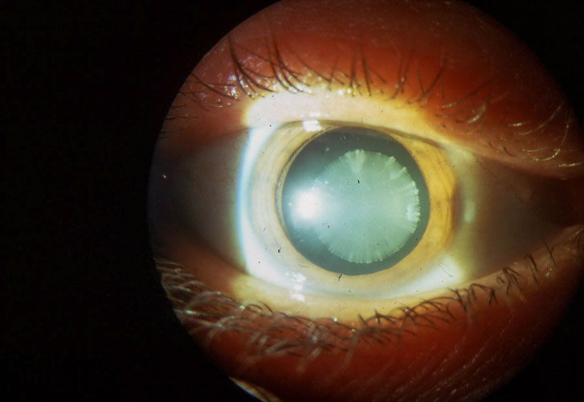
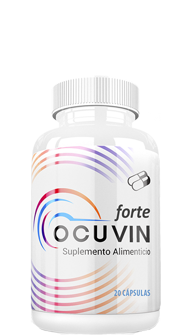

Un joven de 28 años era prácticamente ciego. Tenía pocas posibilidades de recuperar su visión. Durante mucho tiempo, los otros médicos y yo no pudimos ayudarlo. Hasta que apareció una manera fácil que ayudó al paciente a detener el desarrollo de una enfermedad grave. Ahora cualquiera que haya experimentado visión borrosa puede restaurar su visión por su cuenta.
Por la mañana vine a trabajar y vi una gran cola en el vestíbulo de la clínica, era una comisión médica de una de las empresas. Hasta la noche trabajé sin interrupción. El último que entró fue un joven. Estaba sonriendo, trataba de hacer bromas, pero era obvio que estaba nervioso. Comencé a hacer la observación. Con la ayuda del tonómetro para medir la presión ocular. ¡Lo normal es hasta 21 unidades de mercurios, y los de él estaban 3 veces por encima del nivel normal! Era algo serio.
Se le preguntó si tenía alguna queja. No dijo nada. Decidí ponerle que no era apto. De repente comienza a llorar y a admitir que ha empeorado su visión, especialmente por las noches, todo lo ve como destellos de colores. No puede dormir normalmente por dolores de cabeza. Resultó que su madre había quedado ciega hace mucho tiempo por glaucoma. Es el único que lleva ingresos a la familia. Lleno de lágrimas me pidió ponerle el sello de aprobación y prescribirle anteojos. Me dio mucha lástima el chaval, ¿pero en qué pensaba? Dejar empeorar así su salud cuando tienes un ejemplo claro: tu madre.
Si hubiera empezado a actuar tan pronto como comenzaron los problemas, la operación podría haberse evitado. "Le diagnostiqué glaucoma primario en ambos ojos" y lo remití a cirugía.

Ninguna operación garantiza un 100% en sus resultados y en algunos casos sólo puede empeorar la situación. Por eso insto a todos a cuidar su salud y a recurrir a los especialistas a tiempo. En el caso del joven que logramos salvar su visión, la presión bajó a 18 mm de mercurio.
Pero no pasó ni un mes, cuando la presión volvió a aumentar. Le prescribimos medicamentos, no funcionaron. Tuve que hacer algo para salvar al tipo. otros ocho colegas y yo buscamos una solución durante mucho tiempo.
Después de la última conferencia tuve la tarjeta de un respetado profesor de Europa. No hubo tiempo para esperar una respuesta a mi carta, así que decidí llamarlo. Para mi deleite, incluso se acordó de mí y de mi informe. Fue difícil para mí pedirle ayuda. Pero aún así le hablé sobre el caso que tenía por primera vez. El profesor escuchó toda la historia clínica, pidió mostrar las pruebas, el tratamiento y todo lo que habíamos podido recoger hasta ahora.
Después de un par de horas me llamó y me dijo que haría lo mismo si hubiese estado en nuestro lugar. Hicimos lo correcto. Y sólo hay una opción: probar un nuevo remedio, que se presentó recientemente en el último congreso oftalmológico europeo. ha mostrado buenos resultados en las pruebas y ya se está usando en la práctica de algunos especialistas europeos y estadounidenses.

Leí cuidadosamente los documentos sobre la fórmula, leí los materiales de la conferencia. A partir de ellos me di cuenta de que este compuesto era natural, y que en poco tiempo estabilizaba la presión intraocular, fortalecía la estructura de las células de la retina y los vasos sanguíneos. El iris se normaliza al tomar el tratamiento y se mejora la visión.
Le pedí al profesor que me enviara . Para enviarnos el producto con urgencia, el paciente tuvo que endeudarse.
El tratamiento comenzó inmediatamente. Después de una semana, los primeros resultados fueron visibles: no presentaba ojos secos y la presión intraocular se había estabilizado. Le pedí al paciente que llevara un diario de observaciones.
Del diario de observación del paciente:
Resultados 2 semana: No siento presión en mis ojos, dejaron de doler. Veo bien, los capilares han dejado de romperse. Por la noche empecé a dormir tranquilamente, dolores de cabeza ya no me desesperan.
Resultados 4 semana: Los objetos se ven más claros, veo mejor de lejos y de cerca. Ya no veo mosquitos frente a mis ojos.
La revisión después de un mes de usar , la visión del paciente mejoró en un 70%.
Jonás Acevedo, paciente: “Estoy muy contento que todo hubiera salido así. Da miedo solo pensar en lo que habría pasado si no hubiéramos sabido de . Estoy agradecido al destino porque me envió especialistas que si cuidan del destino de sus pacientes. Mis agradecimientos a mi terapeuta que no perdió la esperanza, hizo todo a su alcance y encontró la forma de curarme. Ahora no solamente veo, sino que leo claro. Quién creería que sería un compuesto tan potente. No niego que cuando comencé a tomarlo no creía que me serviría. Pero le creía a mi doctor. Todo para mí se acabó mejor de lo que imaginaba, Ahora tomaré el compuesto dos veces al año para prevenir. No quiero tener ese tipo de problemas otra vez. Tuve mucha suerte, en realidad al poder recuperar mi visión”.
¿Contra qué problemas oculares funciona ?
Tiene una amplia gama de acción:
- alivia la tensión, inflamación, irritación y fatiga de los ojos;
- lucha contra el síndrome del ojo seco;
- normaliza la presión intraocular;
- mejora la claridad de la visión;
- previene el desarrollo de enfermedades oculares.
Pude contactar a los fabricantes, dejar comentarios y acordar un envío de nuestra región No fue una tarea fácil, pero lo bueno es que cualquiera con afección visual puede pedir el medicamento directamente en el sitio web oficial. Yo hice eso porque hay muchas personas como mi paciente. Ignoran los síntomas y luego comienzan a quejarse por el tiempo perdido. Esper o que este ejemplo sirva como enseñanza para todos.
Ahora pueden comprar sin pagar mása, a un precio con descuento del 50% y sin recargo por entrega desde otro continente. Esta promoción aplica solo a un lote de .
Cuídese a usted mismo, su salud y a la salud de sus seres queridos. Cualquier tensión e incomodidad en los ojos puede ser una llamada de atención, no retrase el tratamiento y no olvide la prevención.